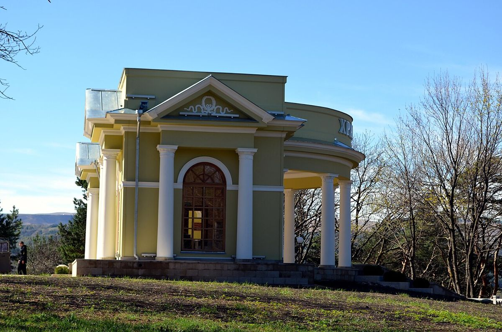
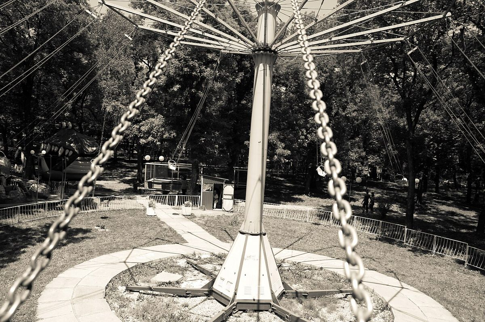

Ребёнок, белки и нарзан: как устроить поездку на КМВ всей семьёй
Детей на Кавказских Минеральных Водах выдают звуки: хруст орехов в Курортном парке Кисловодска, где белки берут угощение прямо с ладони, и возмущённое «фу!» у озера Провал в Пятигорске, где пахнет сероводородом. Для взрослых курорт — это режим и процедуры, для ребёнка — открытие, что вода бывает солёной, газированной из-под земли и пахнущей тухлыми яйцами. Чтобы поездка получилась, нужно совместить оба взгляда.
Коротко: сначала решите, кто лечится — ребёнок или родители; от этого зависит курорт. Затем проверьте, с какого возраста санаторий принимает детей на лечение, и соберите документы: детскую санаторно-курортную карту 076/у, справку об эпидокружении, сведения о прививках.

Сначала — зачем вы едете
Семейная поездка на КМВ бывает двух типов. В первом лечится ребёнок: при хронических проблемах с органами дыхания, ЖКТ, нервной системой, опорно-двигательным аппаратом. Во втором лечатся родители, а ребёнок едет с ними. От этого зависит всё: выбор города, санатория и даже сезона.
Для детей с аллергией и частыми бронхитами чаще выбирают Кисловодск с его сухим горным воздухом. Для проблем с пищеварением — Ессентуки. Железноводск хорош при болезнях почек и мочевыводящих путей, а его лесной парк сам по себе действует успокаивающе. Пятигорск — самый «городской» вариант.
Документы, о которых забывают
Для лечения ребёнку нужна санаторно-курортная карта для детей, форма 076/у, которую оформляет педиатр по месту жительства. Кроме неё санатории обычно просят:
- справку об отсутствии контакта с инфекционными больными (её делают за несколько дней до выезда);
- сведения о прививках;
- анализ на энтеробиоз — требование встречается часто.
Набор документов у разных санаториев отличается, поэтому уточняйте его до покупки билетов. Справка об эпидокружении действует ограниченное время, и сделать её «заранее, за месяц» не получится.

Возраст имеет значение
Не каждый санаторий принимает детей на лечение с раннего возраста. Где-то ребёнок может просто жить с родителями, а процедуры положены лишь с определённого возраста. Это стоит выяснить до бронирования, а не на ресепшене. Ещё один вопрос — питание: детское меню и возможность взять порцию поменьше бывают далеко не везде.
Как не устать от курорта
Ребёнку тяжело выдерживать взрослый ритм «бювет — процедура — обед — тихий час». Помогает простое правило: одна активность вне санатория в день, не больше. Варианты, которые обычно работают:
- Кисловодск: белки и терренкуры Курортного парка, канатная дорога, Замок коварства и любви неподалёку от города.
- Пятигорск: подъём на Машук по канатке, Провал, Эолова арфа с видом на горы.
- Железноводск: тропа вокруг горы Железной и Пушкинская галерея.
- Ессентуки: просторный Курортный парк — удобно с самокатом и коляской.
Первые дни дайте ребёнку привыкнуть, особенно в Кисловодске, где сказывается высота. Капризы и плохой сон в первые сутки — обычная реакция на смену климата.
Где искать
Важнее всего для семьи — детская комната, номер, где разместятся все, и педиатр в санатории. В Кисловодске детей принимают, например, «Семицветик», «Арника», «Джинал», «Луч». Такие здравницы удобно смотреть на Курортеке: в карточках санаториев видно, с какого возраста принимают детей и что входит в программу, а цены указаны на 2026–2027 годы.
Через год дети помнят не процедуры, а белку, утащившую орех с ладони. И это тоже часть лечения.